BERGHOF127
unterstützt durch:

Ausstellungsarchiv
PDFDer Berghof127 ist ein Kunst- und Ausstellungsraum auf einem landwirtschaftlichen Familienbetrieb mit Beeren- und Gemüseanbau in Embrach (ZH). In den Ausstellungen begegnen sich Kunst und bäuerliche Praxis – Stadt trifft Land, unterschiedliche Medien und Perspektiven treffen aufeinander. Das Ausstellungsarchiv mit allen bisherigen Ausstellungen ist als PDF verfügbar.